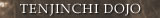
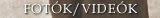
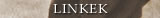

JAFF RAJI : AIKIDO KIHON GIDVD sorozat
Az Aikido Kihon Gi öt részbõl álló DVD sorozat, melyet Jaff Raji 5. danos francia aikido tanár készített. A sorozat tagjai a következõk:
Ahogyan arra a sorozat címe is utal, a több mint hat és fél órás videó anyag az aikido alaptechnikáinak gondosan összeállított és figyelemre méltó terjedelmû tárháza. A DVD-k elején megjelenõ rövid szöveges (több nyelvû) ismertetéseken, illetve a gyakorlatok neveinek kiírásán kívül, a videó anyag nem tartalmaz szöveges vagy szóbeli instrukciót, illetve magyarázatot. A Kihon Gi elsõ lemezének francia alcíme Fondements (Alapok) - tulajdonképpen az “alapok alapjai”. A kazetta elsõ felében egyéni és páros elõkészítõ gyakorlatok láthatók: REISHIKI - tisztelet adás; JUNBI DOSA - légzõ gyakorlatok, aikido “gimnasztika”, hajlékonyság fejlesztõ és lazító gyakorlatok; TANDOKU DOSA - egyéni gyakorlatok: ukemi (háromféle hátragurulás, ötféle elõre gurulás), shikko (elõre 4 fajta, hátra 3 fajta, irimi tenkan), tai sabaki, ashi sabaki (10 alap forma); SOTAI DOSA (pl. katate dori tai no henka, kokyu ho (naname), suwari waza koyu ho). A felkészítõ és rávezetõ gyakorlatok után következik a KIHON WAZA, amely a 12 alap gyakorlat részletes, kulcspontokat kiemelõ bemutatása. A technikák végrehajtását a nekik megfelelõ legtermészetesebb támadási formákból láthatjuk:
A HENKA WAZA rész néhány standard variácós technikát ismertet (HIJI KIME OSAE, UDE KIME NAGE, SUMI OTOSHI, USHIRO KIRI OTOSHI). Minden egyes technikát többször láthatunk különbözõ kameraállásokból, a lényeges részletekre való ráközelítéssel. A lassú, precíz, a kulcspontoknál megállított bemutatásokat mindig egy dinamikus képsorozat követ. Az elsõ DVDt a gyakorlási formák képi áttekintése (suwari waza, hanmi handachi waza ....), valamint az alap támadási módok bemutatása zárja. A további 4 DVD-n szereplõ közel 300 technika (összesen kb. 1500 bemutatott gyakorlat plusz lassítások) rendszerezése a 30 alap támadási forma csoportosításán alapszik. Ezek szerint öt nagy csoportja van a támadási módoknak (v.ö. Ueshiba Morihei Budo, Szenzár Kiadó):
A szerzõ saját bevallása szerint egy semleges stílusú, de mindenféleképpen sallangoktól mentes bemutatási formára törekedett. A hangsúly (a Jaff táborokat látogatók számára nem meglepõ módon) a jó tartásra, a nyugodt, mégis dinamikus erõt sugárzó tiszta mozdulatokra, és az érthetõségre került. A kiegyensúlyozott, kimondottan oktatást, nem pedig a nézõ elkápráztatását célzó elõadásmód azonban nem nélkülöz helyenkénti váratlan ritmusváltásokat, szellemes, “improvizatív” megoldásokat, illetve esetleges “botlásokat”, melyek feltehetõen szándékosan maradtak benne az anyagban, még hitelesebbé, gyakorlásszerûbbé téve azt. A kazetta sorozatot egy úgynevezett “Epilógus” rész zárja (5-ös kazetta vége), amely különbözõ gyakorlási formákban bemutatott rendkívül dinamikus, a formák kereteit átlépõ, jiyu wazákat tartalmaz. Az Aikido Kihon Gi, bár természetesen nem helyettesíti a rendszeres, képzett tanár melletti, gyakorlást, illetve a színvonalas edzõtáborokon való részvételt, fontos kiegészítõ anyag, illetve “emlékeztetõ” lehet kezdõknek, haladóknak, és instruktoroknak egyaránt. Megvásárolható az AIKI-SPORT Budoboltban * KÖNYVAJÁNLÓ: |

|  |
|  |
|  |
|
| Tenjinchi Dojo | EBR International | Raji Ukemi Fitness | Aikido | Jodo | Iaido | Gyerekcsoport | Órarend | Tanárok Hírek/Események | Fotók / Videók | Olvasnivaló | Linkek |